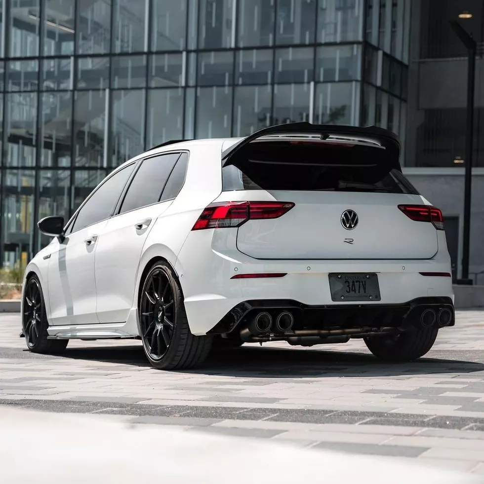
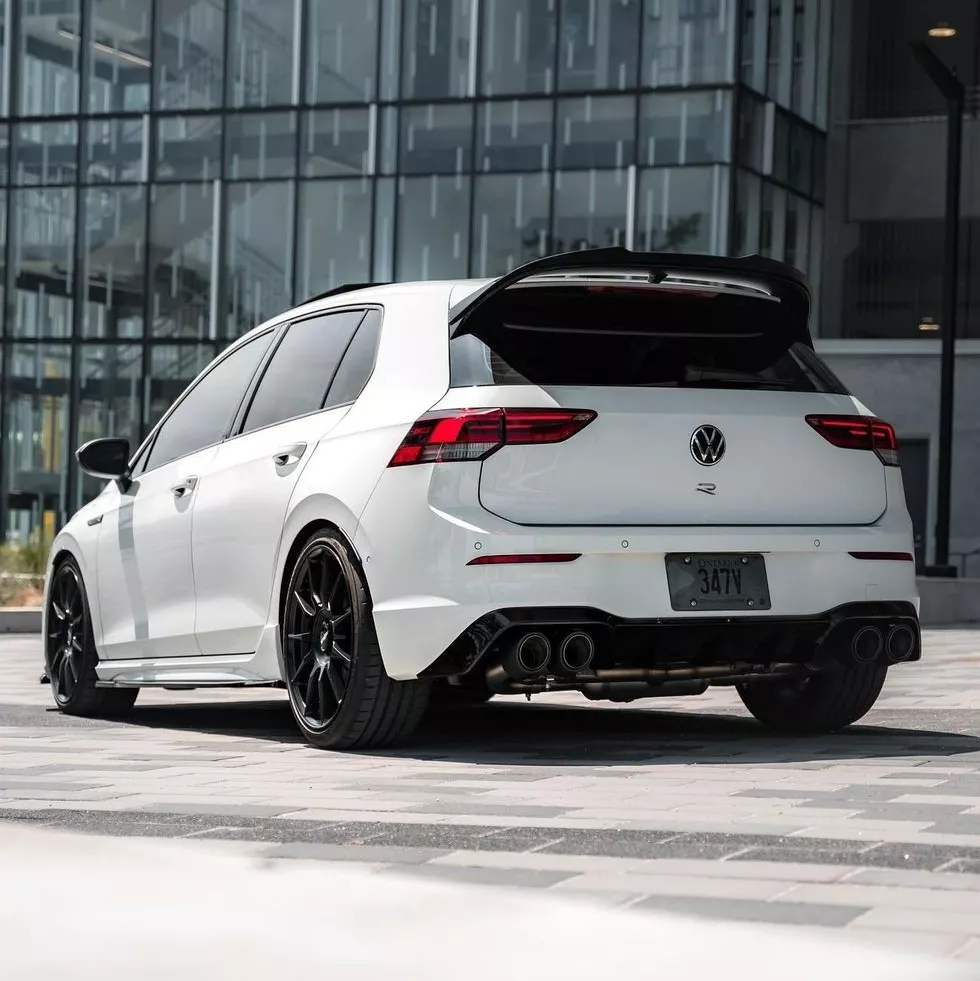

Velocidad máxima: 250km/h/270km/h(paquete R-Performance)
0-100 km/h: 4.6s
Potencia máxima: 320cv
Longitud: 4290mm
Anchura: 1789mm
Altura: 1458mm
Batalla: 2628mm
Peso: 1551kg
La versión R del Golf MK8 es más potente, tiene un ajuste específico del chasis, algunos cambios estéticos más deportivos, tracción total, tres colores disponibles para la carrocería(Blue metallic, Pure White y Deep Black Pearl Effect) y la sigla "R" por todos lados. Además, suma un modo Drift para derrapar. Opcionalmente se ofrece un sistema de escape de titanio Akrapovic. También, está equipado con el mismo bloque de cuatro cilindros y 2.0 litros TSI que los Golf GTI, pero este llega a los 320cv y 250km/h de velocidad máxima. Si se opta por el paquete "R-Performance" la velocidad máxima llega a los 270km/h y se suman los modos de conducción "Special" y el "Drift" ya mencionado.